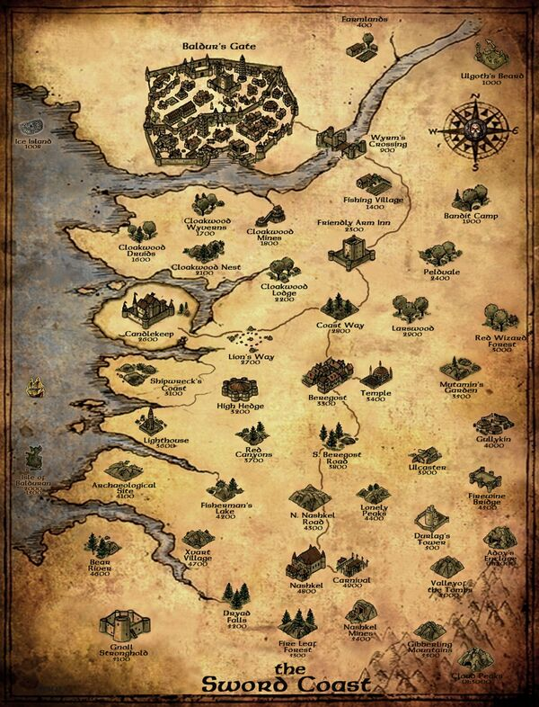

|

|
The player character is the young and orphaned ward of the mage Gorion. The two live in the ancient library fortress
of Candlekeep. Abruptly, the Ward is instructed by Gorion to prepare to leave the citadel during the night with no explanation.
That night, a mysterious armoured figure and his cohorts ambush the pair and order Gorion to hand over the Ward. Gorion refuses,
and dies in the ensuing battle, while urging his Ward to escape. The next morning, the Ward encounters Imoen, a childhood friend
and fellow orphan from Candlekeep,[13] who had followed them in secret. With Candlekeep no longer accessible to them without Gorion's
influence to circumvent its admission fee, and the city of Baldur's Gate currently closed off to outsiders due to bandit raids, the
Ward resolves to investigate the cause of the region's Iron Crisis.
Travelling to the mines of Nashkel, the main source of the region's iron, the Ward's party discovers that the mine's ore is being
contaminated by a group of kobolds led by a half-orc, and that they and the bandits plaguing the region are being controlled by an
organization known as the Iron Throne, a merchant outfit operating out of Baldur's Gate. After sabotaging a mine operated by the Iron
Throne in the Cloakwood that would presumably give them total control over the region's iron, the Ward's party travels to the newly
reopened Baldur's Gate. Invading the Throne's headquarters, the group learns that proof of the organization's involvement with the Iron
Crisis was taken by one of the regional leaders when they and the rest of the leadership headed to Candlekeep for an important meeting.
Revealing their findings to Duke Eltan, the leader of the Flaming Fist, the group receive a rare and valuable book, which would allow them
access into Candlekeep, in order to spy on the meeting. During their investigations in the citadel's library, the Ward discovers a prophecy
written by the ancient seer Alaundo, foretelling how the offspring created during the Time of Troubles by the dead god Bhaal, the Lord of
Murder, will sow chaos until only one remains to become the new Lord of Murder. The Ward then finds a letter from Gorion revealing that the
Ward is among the offspring of Bhaal, known as Bhaalspawn. During their stay at Candlekeep, the Ward's party is imprisoned for the murders
of the Iron Throne leaders, regardless of whether or not they did so, until they can be transported to Baldur's Gate to be executed.
Tethoril, a prominent keeper in Candlekeep, visits the party and reveals that a suspicious character the party met earlier, Koveras, is
really the foster son of one of the now dead Iron Throne leaders. His name is Sarevok, the one responsible for Gorion's murder, and who
also wishes to kill the Ward.
Believing the Ward to be innocent, Tethoril transports the party into the catacombs beneath the fortress, where the party battles their
way through doppelgängers taking on the forms of people the Ward knew in Candlekeep. Returning to Baldur's Gate, the Ward's party find
themselves accused of causing the Iron Crisis on the orders of the Kingdom of Amn, assassinating one of the city's Grand Dukes, and
poisoning Duke Eltan. Forced to stay hidden from the Flaming Fist, the party discovers that the Iron Throne orchestrated the Iron Crisis
to gain control of iron through their mine in the Cloakwood, while using doppelgängers to weaken other merchant outfits, ensuring that they
would have a monopoly on iron. With tensions rising between Baldur's Gate and Amn, the organization hoped to sell the stockpiled iron to
the city at exorbitant prices. Afterward, they aimed to de-escalate tensions between Baldur's Gate and Amn.
The party also discovers that Sarevok, having discovered that he was a Bhaalspawn, hoped to fuel distrust between Baldur's Gate and Amn
by making each think the other was responsible for creating the crisis, and cause them to go to war. Sarevok believed that the resulting
carnage would be enough to allow him to become the new Lord of Murder. Due to the Ward's similar background, he hired assassins to kill
them. Sarevok remained loyal to his father until the Iron Throne's meeting in Candlekeep threatened his plans, which led Sarevok to
eliminate him and the other regional leaders of the Iron Throne before taking over the outfit and transferring their stores of iron to the
city in order to be seen as a savior. He was also responsible for the poisoning of Duke Eltan and the assassination of one of the four Grand Dukes.
The Ward's party gain entry to the Duchal Palace, where the coronation of Sarevok as a Grand Duke of Baldur's Gate would be held, and
present evidence of his schemes. Exposed, Sarevok flees into an ancient underground ruin beneath Baldur's Gate, with the Ward and the party
following after. The Ward confronts Sarevok within an ancient temple to Bhaal, and defeats him, saving the Sword Coast and ending their
brother's schemes. In the final ending cinematic, Sarevok's tainted soul departs his body and travels deep underground to a large circular
chamber of alcoves, and destroys a statue of himself contained in one of the alcoves, whereupon it is revealed that the other alcoves each
contain a statue of a Bhaalspawn that exists in Faerun.
|